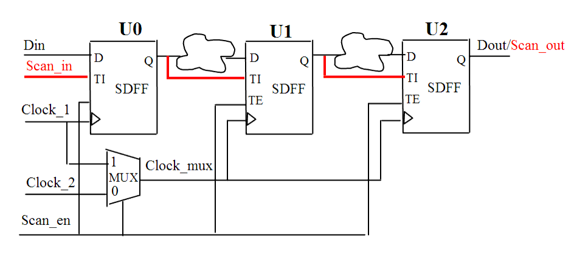

| Description | Having multiple scan clocks in a scan chain may skip some flip-flops or lose some shift during scan chain load/unload steps. This can be fixed using a lookup latch (i.e., inserting a latch when changing the clock edge), but it is a good idea to use a single clock per scan chain. |
| Policy | DESIGN |
| Ruleset | DFT |
| Language | VHDL/Verilog |
| Type | Hardware |
| Severity | Error |
Here are valid and invalid Verilog code examples, followed by a circuit diagram that illustrates the correct approach:
// Invalid Example module ntl_dft11_top(Clock_1, Clock_2, Scan_en, Scan_in, Din, Dout ); //after scan -insert input Clock_1, Clock_2, Scan_en, Scan_in, Din; // NTL_DFT11 fires -- two scan clocks output Dout; reg D_1, D_2, Dout; wire D_11, D_21; // Scan DFF SDFF U0(.D(Din), .CP(Clock_1), .TI(Scan_in), .TE(Scan_en), .Q(D_1)); SDFF U1(.D(D_11), .CP(Clock2), .TI(D_1), .TE(Scan_en), .Q(D_2)); SDFF U2(.D(D_21), .CP(Clock2), .TI(D_2), .TE(Scan_en), .Q(Dout)); ... //Scan path U0 -> U1 -> U2 endmodule // Valid Example module ntl_dft11_top(Clock_1, Clock_2, Scan_en, Scan_in, Din, Dout ); //modified input Clock_1, Clock_2, Scan_en, Scan_in, Din; //two scan clocks output Dout; reg D_1, D_2, Dout; wire D_11, D_21; wire Clock_mux; // OK -- clock_1 is set as the scan clock when test_enable is active MUX U0(.A(Clock_2), .B(Clock_1), .S(Scan_en), .Z(Clock_mux)): //when Scan_en = 0, Clock_mux <- Clock_2 for normal function; //else Clock_mux <- Clock_1 for testing function // Scan DFF SDFF U0(.D(Din), .CP(Clock_1), .TI(Scan_in), .TE(Scan_en), .Q(D_1)); SDFF U1(.D(D_11), .CP(Clock_mux), .TI(D_1), .TE(Scan_en), .Q(D_2)); SDFF U2(.D(D_21), .CP(Clock_mux), .TI(D_2), .TE(Scan_en), .Q(Dout)); ... //Scan path U0 -> U1 -> U2 endmodule